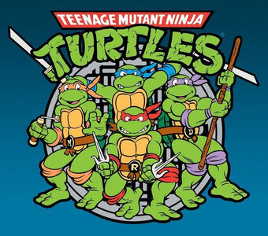
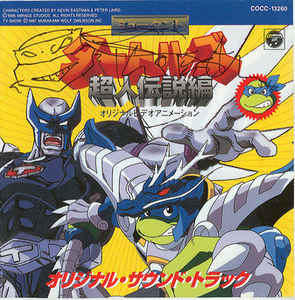
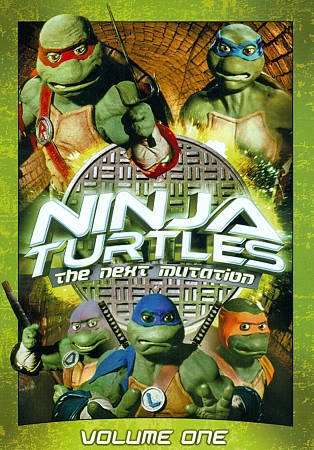
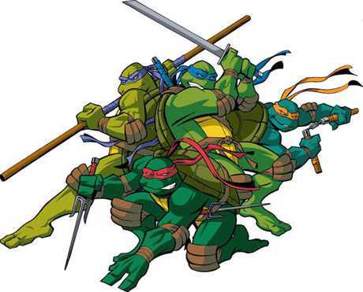
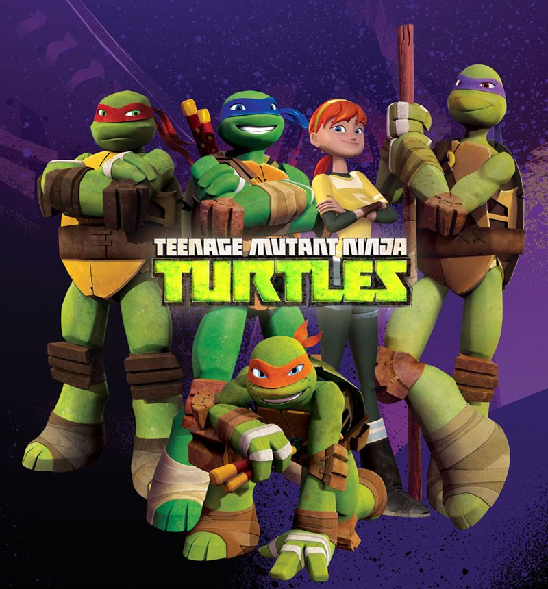
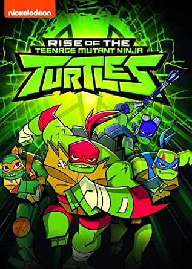

- 
- Teenage Mutant Ninja Turtles (initially known as Teenage Mutant Hero Turtles in the UK and some European countries, and retroactively also known as TMNT 1987) is an American animated television series produced by Murakami-Wolf-Swenson and the French company IDDH. Based on the Teenage Mutant Ninja Turtles comic books created by Kevin Eastman and Peter Laird, the series was the first animated adaptation of the property. The pilot was shown during the week of December 14, 1987 in syndication as a five-part miniseries, and the show began its official run on October 1, 1988. The series ran until November 2, 1996, when it aired its final episode.
Set in New York City, the series follows the adventures of the Teenage Mutant Ninja Turtles and their allies as they battle the Shredder, Krang, and numerous other villains and criminals. The property was changed considerably from the darker-toned comic, to make it more suitable for children and the family.
The show helped launch the characters into mainstream popularity and became one of the most popular animated series in television history. Action figures, breakfast cereals, plush toys, and other merchandise featuring the characters appeared on the market during the late-1980s and early-1990s, and became top-sellers worldwide. A successful Archie Comics comic book based on the animated show instead of the original black-and-white comics was published throughout the late 1980s and early 1990s. By 1990, the series was being shown daily on more than 125 television stations, and the comic books sold 125,000 copies a month.
- 
- In addition to the American series, a Japan-exclusive two-episode anime original video animation (OVA) series was made in 1996, titled Mutant Turtles: Choujin Densetsu-hen. The OVA is similar in tone to the 1987 TV series and uses the same voices from TV Tokyo's Japanese dub of the 1987 TV series. The first episode was made to advertise the TMNT Supermutants toys. It featured the Turtles as superheroes, that gained costumes and superpowers with the use of Mutastones, while Shredder, Bebop and Rocksteady gained supervillain powers with the use of a Dark Mutastone. As with the Super Sentai and Power Rangers franchises, the four Turtles could combine to form the giant Turtle Saint. The second episode was created to advertise the Metal Mutants toys in which the characters gain Saint Seiya-esque mystical metal armor that can transform into beasts.
- 
- In 1997–1998, the Turtles starred in a live-action television series called Ninja Turtles: The Next Mutation that directly follows the events of the first three movies. A fifth turtle was introduced, a female named Venus de Milo, who was skilled in the mystical arts of the shinobi. The series was intended as a loose continuation of the movie franchise, as Shredder had been defeated and the Ninja Turtles encountered new villains. Other connections to the feature films include the fact that Splinter's ear was cut, the Foot Soldiers were humans, and the Turtles lived in the abandoned subway station seen in the second and third movies. The Next Mutation Turtles made a guest appearance on Power Rangers in Space. It was canceled after one season of 26 episodes.
- 
- In 2003, a new TMNT series produced by 4Kids Entertainment began airing on the "FoxBox" (later renamed "4Kids TV") programming block. It later moved to "The CW4Kids" block. The series was co-produced by Mirage Studios, and Mirage owned one-third of the rights to the series. Mirage's significant stake in creative control resulted in a cartoon that hews more closely to the original comics, creating a darker and edgier feel than the 1987 cartoon, but still child-friendly enough to be considered appropriate for children.
This series lasted until 2009, ending with a feature-length television movie titled Turtles Forever, which was produced in conjunction with the 25th anniversary of the TMNTs franchise and featured the Turtles of the 2003 series teaming up with their counterparts from the 1987 series, and eventually are visited by the black and white comic versions of themselves in the final act. 4Kidstv.com featured all the episodes of the series, until September 2010, when Nickelodeon bought the series and air the series occasionally on Nicktoons and Nickelodeon normally during TMNTs marathons.
- 
- Nickelodeon acquired the global rights to Teenage Mutant Ninja Turtles from the Mirage Group and 4Kids Entertainment, Inc. and announced a new CGI-animated TMNT television series. The 2012 version is characterized by anime-like iconography and emphasis on mutagen continuing to wreak havoc on the everyday lives of the Turtles and their enemies; in addition, the tone of this version is similar to the original series, but also features a handful of serious episodes as well. The series ran for five seasons.
- 
- Starting in 2018 and continuing to the present day, Nickelodeon made a new 2D animated series based on the franchise, which appeared on September 2018. This version is characterized by lighter humor, and also had some anime iconography.